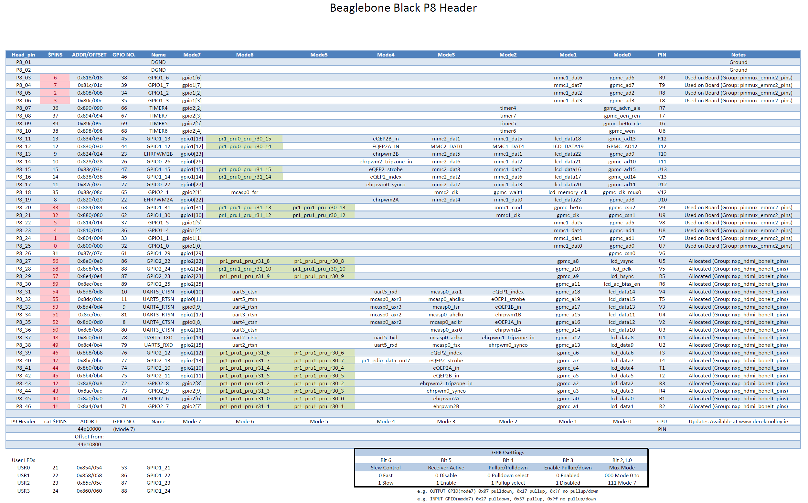

GPIO Library Creation and System-Wide Installation Guide
This workshop will detail how to set up the BBB’s GPIO pins. General Purpose Input/Output (GPIO) pins are special in that they can be configured at runtime to perform in a variety of ways, ranging from simple i/o to serial interfaces to specialized encoder readings. While the BBB supports up the 69 gpio pins, in reality the majority of the pins are being used by onboard system processes such as the board’s HDMI and LCD abilities. This post will detail the steps necessary to take advantage of these otherwise inaccessible pins, as well as configure a gpio pin to suit the user’s needs.
This guide walks you through creating a simple GPIO library in C, compiling it into both a static and shared library, and installing it system-wide. We'll start with manual gcc commands and then automate the process using a Makefile.
Linux Kernel Version
This guide assumes the user’s BBB is running Linux Kernel 4.1.15. If an earlier version is used, such as 3.8.X, then abundant information on configuring the BBB can be found through google and the procedures listed in this guide will probably not work.
BBB Headers and Pinout
The BBB has two 23 pin columns on each side of the board, for a total of 92 pins available to the user. The right header is designated as P8 while the left is designated P9. Pay careful attention to the orientation of the BBB in reference to the pinout numbers, else you risk mis-wiring the board and potentially causing irreversible damage. Physical pins are numbered in the following manner, PX_Y, where X is the header where the pin is located (8 or 9) and Y is the location of the pin with that header. Pins P8_1 and P9_1 are located at the top right of each header. Notice that the left column of each header are all the odd pins while the right column of each header are all the even pins.

As seen in the graphic, the first and last rows of pins are dedicated to nets such as DGND, VDD_3V3 (3.3V Output), VDD_5v (5V Output), and system power/reset. The rest of the pins are configurable in software, as will be detailed later in this post. The labels on the graphic show the default mode of the pins. Not all pins are able to be used as GPIO’s immediately. Systems such as the LCD and HDMI drivers take priority to these pins. A more detailed view of the BBB’s header’s and pin usage can be seen in the graphics below


GPIO Numbering Scheme
The gpio pins of the bbb are grouped into 3 groups of 32: GPIO0, GPIO1, and GPIO2. An individual pin can be refered to using the
convention GPIOX_Y where X is its gpio register and Y is its number within that register. However, all references to a particular
pin made in software instead uses its absolute pin number! A gpio's absolute pin number is calculated in the following manner: Z = 32*X + Y where X is again the gpio register and Y is the position within that register.
i.e. GPIO2_24 is 32*2+24, making it GPIO_88. If this pin were to be referenced anywhere in software, the user would use the number 88, not 24!
Overloaded Pins
Additional scrutiny of the above header pin layouts shows all the possible uses of each individual pin. Any pin highlighted in red is a pin that is inaccessible for use as a gpio pin by default, see the notes column for it's initial allocation. As an example, P8_28, aka GPIO2_24, aka GPIO_88, is by default allocated to the nxp_hdmi_bonelt_pins group. While it is overloaded in this capacity,no other use can be made of this pin. Multiple modes are available for each pin, and setting these modes wil be discussed in a later section.
Recap of Numbering Schemes
As a recap, each gpio pin on the BBB has three different numbering schemes associated with it!
- The physical pin location, in the form of
PX_Y(P8_28) - The gpio name, in the form of
GPIOX_Y(GPIO2_24) - The gpio number, in the form of
32*X + Y(88)
Only the last scheme, the gpio number, is used in software!
Interacting with GPIO Pins on the BeagleBone Black (BBB) via Sysfs
The BeagleBone Black (BBB) and similar Linux-based systems allow you to interact with GPIO (General-Purpose Input/Output) pins using the sysfs interface. This interface exposes GPIO control via a set of files in the /sys/class/gpio directory. Below is an explanation of common GPIO operations using this interface.
1. Change Directory to GPIO Sysfs Interface
$ cd /sys/class/gpio
Explanation:
- The
/sysdirectory is a virtual filesystem (sysfs) that the Linux kernel uses to expose information and configuration options for various devices and drivers. Within/sys/class/gpio, you'll find files and directories related to the GPIO subsystem, allowing you to interact with GPIO pins directly from the command line or within scripts.
Elevate user to super user.
$ sudo su
We interact with BBB pins via a set of files that are read/written to. To reach the directory where these files are located, enter the following.
$ cd /sys/class/gpio
List the directory.
$ ls -l
--w--w---- 1 root gpio 4.0K Apr 7 20:17 export
lrwxrwxrwx 1 root gpio 0 Apr 7 20:17 gpio10 -> ../../devices/platform/ocp/44e07000.gpio/gpiochip0/gpio/gpio10
lrwxrwxrwx 1 root gpio 0 Apr 7 20:17 gpio11 -> ../../devices/platform/ocp/44e07000.gpio/gpiochip0/gpio/gpio11
lrwxrwxrwx 1 root gpio 0 Apr 7 20:17 gpio110 -> ../../devices/platform/ocp/481ae000.gpio/gpiochip3/gpio/gpio110
lrwxrwxrwx 1 root gpio 0 Apr 7 20:17 gpio111 -> ../../devices/platform/ocp/481ae000.gpio/gpiochip3/gpio/gpio111
lrwxrwxrwx 1 root gpio 0 Apr 7 20:17 gpio112 -> ../../devices/platform/ocp/481ae000.gpio/gpiochip3/gpio/gpio112
...
--w--w---- 1 root gpio 4.0K Apr 7 20:17 unexport
$ cd gpio27
If you ls the directory you will see the following:
$ ls
Understanding Files and Directories in the gpio# Directory
When working with GPIO (General-Purpose Input/Output) pins on a BeagleBone Black (BBB) or similar Linux-based systems, you'll encounter several files and directories within the gpio# directory located in /sys/class/gpio/. Each file or directory serves a specific purpose in controlling and configuring the GPIO pin. Here's what each one does:
Files and Directories
-
active_low- Purpose: Controls whether the logic level of the GPIO pin is inverted.
- Values:
0: The default setting. A0in thevaluefile corresponds to a low logic level (0V), and a1corresponds to a high logic level (3.3V or 5V, depending on the board).1: Inverts the logic level. A0in thevaluefile now corresponds to a high logic level, and a1corresponds to a low logic level.
- Usage: Writing
1to this file inverts the pin's logic, which can be useful when dealing with hardware that operates on inverted logic.
-
device- Purpose: A symbolic link to the device directory in sysfs that represents the GPIO controller to which this GPIO pin belongs.
- Details: This link provides a path back to the parent device, helping to identify the specific GPIO controller that manages this pin, especially on systems with multiple GPIO controllers.
-
direction- Purpose: Configures the direction of the GPIO pin.
- Values:
in: Configures the pin as an input, allowing you to read the state of the pin.out: Configures the pin as an output, allowing you to set the state of the pin.
- Usage: You can read or write to this file to change or check whether the GPIO pin is set as an input or output.
-
edge- Purpose: Configures the type of edge detection to trigger an interrupt for the GPIO pin.
- Values:
none: No edge detection.rising: Detects when the pin changes from low to high.falling: Detects when the pin changes from high to low.both: Detects both rising and falling edges.
- Usage: Writing to this file sets the type of edge detection. It's often used in interrupt-driven applications where you need to respond to changes in the GPIO pin's state.
-
label- Purpose: Provides a label or identifier for the GPIO pin.
- Details: This is usually set by the kernel or device tree and identifies the pin by name. It's helpful for debugging or when managing multiple GPIO pins.
-
power- Purpose: Provides power management controls for the GPIO pin.
- Details: This directory typically contains files related to the power state of the GPIO pin, such as runtime power management options. These controls might be more relevant in complex power-managed systems.
-
subsystem- Purpose: A symbolic link to the subsystem the GPIO belongs to within sysfs.
- Details: This link typically points back to
/sys/class/gpio/, indicating that this GPIO pin is part of the GPIO subsystem. It's part of the hierarchical organization in sysfs.
-
uevent- Purpose: Provides information for udev, the device manager for the Linux kernel.
- Details: This file is used by udev to manage dynamic device nodes and trigger events when the state of the GPIO changes. It's generally used internally by the system for device management.
-
value- Purpose: Reads or sets the current value of the GPIO pin.
- Values:
0: Indicates a low state (0V) when reading, or sets the pin to a low state when writing.1: Indicates a high state (3.3V or 5V) when reading, or sets the pin to a high state when writing.
- Usage: This is the primary file used to interact with the GPIO pin. Reading from it returns the current state of the pin, and writing to it sets the pin's output level if the pin is configured as an output.
Set GPIO Pin 27 as an Output
This command sets the direction of GPIO pin 27 to output by writing out to the direction file.
echo out > direction
Explanation:
The direction file controls whether the GPIO pin is configured as an input or an output.
Writing
outto this file configures the pin as an output, meaning you can set the pin's value (high or low) to control external devices (e.g., turning an LED on or off).Alternatively, writing in would configure the pin as an input, allowing the pin to read signals from external devices.
Read the Current Value of GPIO Pin 27
This command sets GPIO pin 27 to a high state (1) by writing 1 to the value file.
$ echo 1 > value
Explanation:
The value file is used to control the state of a GPIO pin when it's configured as an output.
Writing
1to this file sets the pin to a high state (e.g., 3.3V or 5V, depending on the board), which might turn on an LED or send a signal to another device.Writing
0would set the pin to a low state (0V), turning off the LED or signaling a low state to another device.
Access using C library
The gpio.h library will be developed further below.
#include "gpio.h"
~~~
~~~
unsigned int pin = 14;
gpio_set_dir(pin,OUT);
gpio_set_value(pin,1);
2. Accessing Inaccessible Pins
Before going into the details of configuring inaccessible pins, it is necessary to briefly go over the inner workings of the BBB and touch on concepts such as pin modes, the device tree and its overlays, and how to interact with it.
Pin Modes
As seen in the above graphics detailing the P8 and P9 headers, each pin can be configured to one out of 8 possible modes. For our purposes, it is important to note that mode7 is always the GPIO configuration for every pin.
The pin mode for any given pin is stored in 7 bits using the following convention.

Notice the example configurations under the table. The bits values are listed in Hexadecimal form, so that the two digits following "0x" contain the values of all 7 bits. The last digit of the pair contains the values of bits 0,1,2, and 3. As such, in order to be in mode7 (GPIO) bits 0,1, and 2 are all 1, giving a possible value of either 7 or F for the last hex digit. (Binary of either 0111 or 1111). The first digit of the pair contains the values of bits 4,5, and 6 (with the most significant bit being a constant 0). If the pin is configured as an output, then the possible values of this bit are 0 and 1 (0000 and 0001) depending on if pull down or pull up is selected. If the pin is an input, the possible values are 2 and 3 (0010 and 0011), again depending on the pullup/down setting
The pin mode of each pin is configured in what is called a device tree overlay, which will be discussed in detail in a later section.
Step 1: Create the Header File (gpio.h)
-
First, create a header file that declares the functions and defines necessary constants and enums.
Code here...
#ifndef GPIO_H #define GPIO_H #define SYSFS_GPIO_DIR "/sys/class/gpio" #define POLL_TIMEOUT (3 * 1000) /* 3 seconds */ #define MAX_BUF 64 #define LED_DIR "/sys/class/leds/beaglebone:green:usr" typedef enum { INPUT_PIN = 0, OUTPUT_PIN = 1 } PIN_DIRECTION; typedef enum { LOW = 0, HIGH = 1 } PIN_VALUE; typedef struct { char pin_name[6]; unsigned int gpio_number; } PinMap; // Static array to map pin names to GPIO numbers PinMap pin_map[] = { {"P8_31", 10}, {"P8_32", 11}, {"P9_31", 110}, {"P9_29", 111}, {"P9_30", 112}, {"P9_28", 113}, {"P9_92", 114}, {"sysfs", 115}, {"P9_91", 116}, {"P9_25", 117}, {"P9_20", 12}, {"P9_19", 13}, {"P9_26", 14}, {"P9_24", 15}, {"A15", 19}, {"P9_22", 2}, {"P9_41", 20}, {"P8_19", 22}, {"P8_13", 23}, {"P8_14", 26}, {"P9_21", 3}, {"P9_11", 30}, {"P9_13", 31}, {"P8_25", 32}, {"P8_24", 33}, {"P8_05", 34}, {"P8_06", 35}, {"P8_23", 36}, {"P8_22", 37}, {"P8_03", 38}, {"P8_04", 39}, {"P9_18", 4}, {"P8_12", 44}, {"P8_11", 45}, {"P8_16", 46}, {"P8_15", 47}, {"P9_15", 48}, {"P9_23", 49}, {"P9_17", 5}, {"P9_14", 50}, {"P9_16", 51}, {"P9_12", 60}, {"P8_26", 61}, {"P8_21", 62}, {"P8_20", 63}, {"P8_18", 65}, {"P8_07", 66}, {"P8_08", 67}, {"P8_10", 68}, {"P8_09", 69}, {"P9_42", 7}, {"P8_45", 70}, {"P8_46", 71}, {"P8_43", 72}, {"P8_44", 73}, {"P8_41", 74}, {"P8_42", 75}, {"P8_39", 76}, {"P8_40", 77}, {"P8_37", 78}, {"P8_38", 79}, {"P8_35", 8}, {"P8_36", 80}, {"P8_34", 81}, {"P8_27", 86}, {"P8_29", 87}, {"P8_28", 88}, {"P8_30", 89}, {"P8_33", 9}, {"P8_27", 17} }; // Function prototypes using pin names int find_gpio_number(const char *pin_name); int led_set_value(const char *pin_name, PIN_VALUE value); int gpio_set_dir(const char *pin_name, PIN_DIRECTION out_flag); int gpio_set_value(const char *pin_name, PIN_VALUE value); int gpio_get_value(const char *pin_name, unsigned int *value); int gpio_set_edge(const char *pin_name, const char *edge); int gpio_fd_open(const char *pin_name); int gpio_fd_close(int fd); #endif /* GPIO_H */
Step 3: Create the Implementation File (gpio.c)
-
Next, create the
gpio.cfile that implements the functions declared ingpio.h.Code here...
#include "gpio.h" #include <stdio.h> #include <stdlib.h> #include <string.h> #include <errno.h> #include <unistd.h> #include <fcntl.h> #include <poll.h> // Function to find GPIO number from pin name int find_gpio_number(const char *pin_name) { for (int i = 0; i < sizeof(pin_map) / sizeof(PinMap); i++) { if (strcmp(pin_map[i].pin_name, pin_name) == 0) { return pin_map[i].gpio_number; } } return -1; // Return -1 if the pin is not found } // GPIO functions using pin names directly int led_set_value(const char *pin_name, PIN_VALUE value) { unsigned int gpio = find_gpio_number(pin_name); if (gpio == -1) { fprintf(stderr, "Invalid pin name: %s\n", pin_name); return -1; } char buf[MAX_BUF]; snprintf(buf, sizeof(buf), LED_DIR "%d/brightness", gpio); int fd = open(buf, O_WRONLY); if (fd < 0) { perror("led/set-value"); return fd; } if (value == LOW) { write(fd, "0", 2); } else { write(fd, "1", 2); } close(fd); return 0; } int gpio_set_dir(const char *pin_name, PIN_DIRECTION out_flag) { unsigned int gpio = find_gpio_number(pin_name); if (gpio == -1) { fprintf(stderr, "Invalid pin name: %s\n", pin_name); return -1; } char buf[MAX_BUF]; snprintf(buf, sizeof(buf), SYSFS_GPIO_DIR "/gpio%d/direction", gpio); int fd = open(buf, O_WRONLY); if (fd < 0) { perror("gpio/direction"); return fd; } if (out_flag == OUTPUT_PIN) { write(fd, "out", 4); } else { write(fd, "in", 3); } close(fd); return 0; } int gpio_set_value(const char *pin_name, PIN_VALUE value) { unsigned int gpio = find_gpio_number(pin_name); if (gpio == -1) { fprintf(stderr, "Invalid pin name: %s\n", pin_name); return -1; } char buf[MAX_BUF]; snprintf(buf, sizeof(buf), SYSFS_GPIO_DIR "/gpio%d/value", gpio); int fd = open(buf, O_WRONLY); if (fd < 0) { perror("gpio/set-value"); return fd; } if (value == LOW) { write(fd, "0", 2); } else { write(fd, "1", 2); } close(fd); return 0; } int gpio_get_value(const char *pin_name, unsigned int *value) { unsigned int gpio = find_gpio_number(pin_name); if (gpio == -1) { fprintf(stderr, "Invalid pin name: %s\n", pin_name); return -1; } char buf[MAX_BUF]; snprintf(buf, sizeof(buf), SYSFS_GPIO_DIR "/gpio%d/value", gpio); int fd = open(buf, O_RDONLY); if (fd < 0) { perror("gpio/get-value"); return fd; } char ch; read(fd, &ch, 1); *value = (ch != '0') ? 1 : 0; close(fd); return 0; } int gpio_set_edge(const char *pin_name, const char *edge) { unsigned int gpio = find_gpio_number(pin_name); if (gpio == -1) { fprintf(stderr, "Invalid pin name: %s\n", pin_name); return -1; } char buf[MAX_BUF]; snprintf(buf, sizeof(buf), SYSFS_GPIO_DIR "/gpio%d/edge", gpio); int fd = open(buf, O_WRONLY); if (fd < 0) { perror("gpio/set-edge"); return fd; } write(fd, edge, strlen(edge) + 1); close(fd); return 0; } int gpio_fd_open(const char *pin_name) { unsigned int gpio = find_gpio_number(pin_name); if (gpio == -1) { fprintf(stderr, "Invalid pin name: %s\n", pin_name); return -1; } char buf[MAX_BUF]; snprintf(buf, sizeof(buf), SYSFS_GPIO_DIR "/gpio%d/value", gpio); int fd = open(buf, O_RDONLY | O_NONBLOCK); if (fd < 0) { perror("gpio/fd_open"); } return fd; } int gpio_fd_close(int fd) { return close(fd); }
Step 4: Compile the Object File and Create Libraries
-
Compile gpio.c into an Object File by Using the following command to compile
gpio.cinto an object file (gpio.o):$ gcc -c gpio.c -o gpio.o -
Create a Static Library (
libgpio.a) to create a static library, use thearcommand:$ ar rcs libgpio.a gpio.o- Command Breakdown:
ar: The archiver tool used to create and maintain library archives.rcs: Flags where r inserts the files into the archive, c creates the archive if it doesn't exist, and s creates an index for quick symbol lookup.libgpio.a: The name of the static library being created.gpio.o: The object file to be included in the library.
Explanation: What is a Static Library?
A static library is a collection of object files that are linked into the final executable at compile time. Once linked, the code from the static library becomes part of the executable binary. This means that the executable will carry a copy of the library's code, making it self-contained and independent of the library file after compilation.
- Command Breakdown:
-
Create a Shared Library (
libgpio.so) to create a shared library, use the followinggcccommand:$ gcc -shared -o libgpio.so gpio.o- Command Breakdown:
-shared: Tells gcc to produce a shared library.-o libgpio.so: Specifies the output filename for the shared library.gpio.o: The object file to be included in the library.
Explanation: What is a Shared Library?
A shared library, on the other hand, is not linked into the final executable at compile time. Instead, it is loaded into memory at runtime. Multiple programs can share a single copy of a shared library, which can save memory and allow updates to the library without recompiling the programs that use it.
- Command Breakdown:
Step 5: Install the Header and Library Files System-Wide
-
You could manually copy the header file to
/usr/includeand the libraries to/usr/lib, or skip to the next section and create aMakefileto do it for you each time.$ sudo cp gpio.h /usr/include/ $ sudo cp libgpio.a /usr/lib/ $ sudo cp libgpio.so /usr/lib/ $ sudo ldconfig # Update the shared library cache
Step 5: Automate with a Makefile
-
Instead of running these commands manually, you can automate the build process using a Makefile.
Code here...
# Variables CC = gcc CFLAGS = -Wall -Werror -fPIC # -fPIC is needed for shared libraries AR = ar ARFLAGS = rcs TARGET_STATIC = libgpio.a TARGET_SHARED = libgpio.so OBJ = gpio.o # Default target: Build both libraries all: $(TARGET_STATIC) $(TARGET_SHARED) # Compile the gpio.c into an object file $(OBJ): gpio.c $(CC) $(CFLAGS) -c gpio.c -o $(OBJ) # Create the static library $(TARGET_STATIC): $(OBJ) $(AR) $(ARFLAGS) $(TARGET_STATIC) $(OBJ) # Create the shared library $(TARGET_SHARED): $(OBJ) $(CC) -shared -o $(TARGET_SHARED) $(OBJ) # Clean up build artifacts clean: rm -f $(OBJ) $(TARGET_STATIC) $(TARGET_SHARED) # Install libraries and header install: $(TARGET_STATIC) $(TARGET_SHARED) sudo cp gpio.h /usr/include/ sudo cp $(TARGET_STATIC) /usr/lib/ sudo cp $(TARGET_SHARED) /usr/lib/ sudo ldconfig # Uninstall libraries and header uninstall: sudo rm -f /usr/include/gpio.h sudo rm -f /usr/lib/$(TARGET_STATIC) sudo rm -f /usr/lib/$(TARGET_SHARED) sudo ldconfig # Phony targets .PHONY: all clean install uninstall -
As long as the Makefile is within directory with the custom gpio c files you can use the
makecommand:-
Remove
gpio.h, and static and share libraries from the respective directories$ make uninstall -
To clean up the build artefacts run:
$ make clean -
To build the libraries and object files:
$ make all -
Lastly, use the install command to cp libraries and header to respective root directories:
$ make install > gcc -Wall -Werror -fPIC -c gpio.c -o gpio.o ar rcs libgpio.a gpio.o gcc -shared -o libgpio.so gpio.o
-
Step 6: Using the our new libary to control a pin
-
Change directory and
../and make a new directory calledblinkand navigate into it.$ cd ../ $ mkdir blink $ cd blink -
Create a new .c file called...
blink.cand chose your preferred editor to open it.$ touch blink.c $ vim blink.c -
Now we are going to set up the program to use our system wide library and header with
gpio.h:Code here...
#include <stdio.h> #include <unistd.h> #include "gpio.h" int main() { const char *pin_name = "P9_30"; // Use the pin name directly // Set the GPIO direction to output gpio_set_dir(pin_name, OUTPUT_PIN); while(1){ // Set the GPIO pin value to HIGH (turn on the LED) gpio_set_value(pin_name, HIGH); printf("LED on %s is ON\n", pin_name); // Wait for a few seconds sleep(3); // Set the GPIO pin value to LOW (turn off the LED) gpio_set_value(pin_name, LOW); printf("LED on %s is OFF\n", pin_name); sleep(3); } return 0; } -
We can use this oneliner to compile the code:
$ gcc gpio.c -lgpio -o blink -
Alternatively we can use a
Makefilelike before:Code here...
# Compiler and flags CC = gcc CFLAGS = -Wall -Werror # Target executable name TARGET = blink # Source files SRC = blink.c # Library to link against LIBS = -lgpio # Default target: build the executable all: $(TARGET) # Build the executable $(TARGET): $(SRC) $(CC) $(CFLAGS) $(SRC) $(LIBS) -o $(TARGET) # Clean up build artifacts clean: rm -f $(TARGET) # Phony targets to avoid conflicts with files of the same name .PHONY: all cleanInvoke make to build the executable:
$ make -
Use the led and etc to wire up and run the code:
$ ./blink- If all is well, and you have connected up your led to the correct pin, the light should turn on and then off.